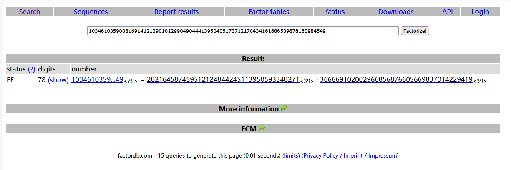
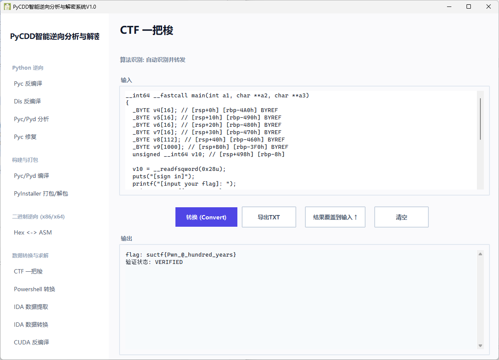

GFSJ0884-【SignIn】
RSA
放在逆向里面 有点猎奇 main函数 这个 sub_96A(v8, v9); 不用看 是真的没有用 就是一个转换十六进制大整数
__int64 __fastcall main(int a1, char **a2, char **a3)
{
_BYTE v4[16]; // [rsp+0h] [rbp-4A0h] BYREF
_BYTE v5[16]; // [rsp+10h] [rbp-490h] BYREF
_BYTE v6[16]; // [rsp+20h] [rbp-480h] BYREF
_BYTE v7[16]; // [rsp+30h] [rbp-470h] BYREF
_BYTE v8[112]; // [rsp+40h] [rbp-460h] BYREF
_BYTE v9[1000]; // [rsp+B0h] [rbp-3F0h] BYREF
unsigned __int64 v10; // [rsp+498h] [rbp-8h]
v10 = __readfsqword(0x28u);
puts("[sign in]");
printf("[input your flag]: ");
__isoc99_scanf("%99s", v8);
sub_96A(v8, v9);
__gmpz_init_set_str(v7, "ad939ff59f6e70bcbfad406f2494993757eee98b91bc244184a377520d06fc35", 16);
__gmpz_init_set_str(v6, v9, 16);
__gmpz_init_set_str(v4, "103461035900816914121390101299049044413950405173712170434161686539878160984549", 10);
__gmpz_init_set_str(v5, "65537", 10);
__gmpz_powm(v6, v6, v5, v4);
if ( (unsigned int)__gmpz_cmp(v6, v7) )
puts("GG!");
else
puts("TTTTTTTTTTql!");
return 0;
}
整体逻辑是 把输入经 sub_96A 转成十六进制大整数后 计算 m^65537 mod n 再和固定密文比较 直接分解这个 n 并反推明文 就可以了

exp
n = 103461035900816914121390101299049044413950405173712170434161686539878160984549
e = 65537
c = int("ad939ff59f6e70bcbfad406f2494993757eee98b91bc244184a377520d06fc35", 16)
p = 366669102002966856876605669837014229419
q = 282164587459512124844245113950593348271
phi = (p - 1) * (q - 1)
d = pow(e, -1, phi)
m = pow(c, d, n)
flag = bytes.fromhex(hex(m)[2:])
print(flag)
flag
suctf{Pwn_@_hundred_years}
一把梭

评论